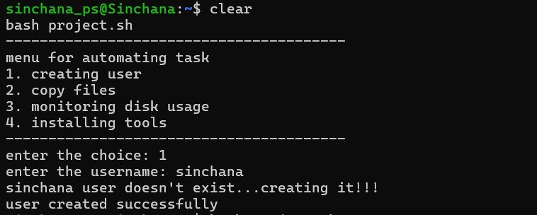
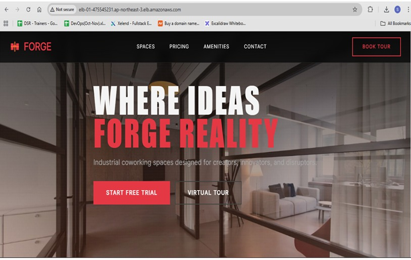
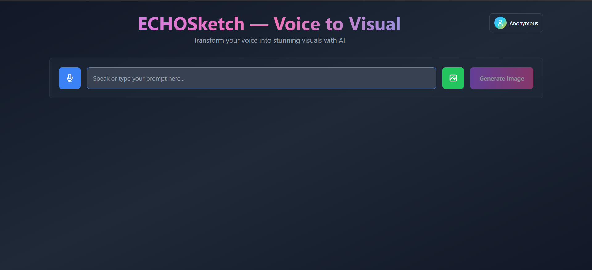
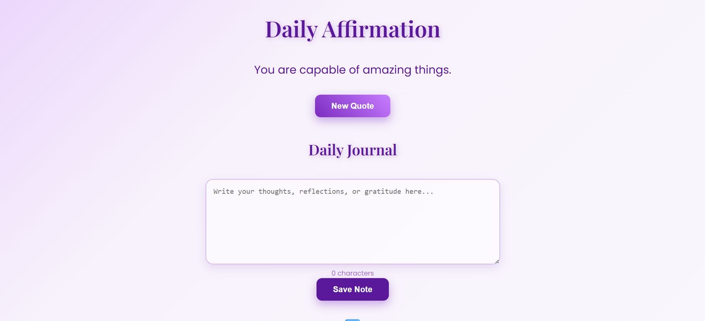
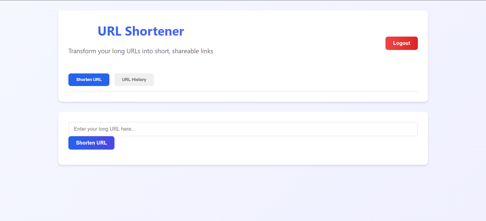
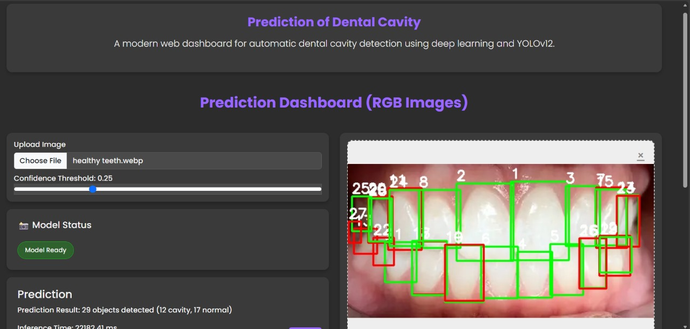

Linux Automation Toolkit using Shell Scripting
Developed a menu-driven shell scripting project to automate Linux administrative tasks such as user creation, file copying between directories, disk usage monitoring, and software installation. The tool simplifies repetitive system administration tasks through an interactive menu-based interface, improving efficiency and reducing manual effort using Linux, Bash/Shell Scripting, and automation techniques.

Multi‑AZ AWS Infrastructure
Implementation of multi availability zone scalable infrastructure using VPC and other AWS services. A highly available and scalable AWS infrastructure using a custom VPC across multiple Availability Zones. The architecture improves fault tolerance, load balancing, and application availability by distributing resources across public and private subnets in AWS.

Echosketch — Voice to Visual
An AI-powered web application that converts voice or text prompts into images using Google Gemini, built with React, TypeScript, JavaScript, HTML, CSS (Tailwind) and the Web Speech API, delivering a fast, responsive, and accessible user experience.

Daily Affirmations — Full-Stack MERN Application
A full-stack MERN web application that delivers daily positive affirmations to users, with features for saving favorites and sharing affirmations across platforms. Built with MongoDB, Express, React, and Node.js, the app focuses on clean UI, persistent user data, and an engaging, wellness-oriented user experience.

URL Shortener — Full-Stack MERN Application
A full-stack MERN web application that creates short URLs, tracks click analytics, and provides a responsive dashboard for managing links. Built with MongoDB, Express, React, and Node.js, the app supports real-time redirection, persistent link storage, and an intuitive UI for monitoring link performance and usage trends.

Prediction Dental Cavity Using Deep Learning
An AI-driven dental cavity detection system built using the YOLOv12 deep learning model to identify cavities from dental images with high accuracy. Developed in Python and deployed using Flask with a Dockerized (Dockerfile) environment, enabling scalable, real-time inference through a lightweight web interface.